| Image | Name | Description | Achievement |
|---|---|---|---|
| 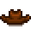 | Cowboy Hat | The leather is old and cracked, but surprisingly supple. It smells musty. |
A Complete Collection (Complete the Museum) |
| 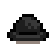 | Bowler Hat | Made from smooth felt. |
Millionaire (1 Million Earned) |
| 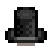 | Top Hat | A gentleman's classic. |
8,000 Qi coins in Qi's Casino |
| 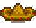 | Sombrero | A festively decorated hat made from woven straw. |
Legend (10 Million Earned) |
| 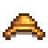 | Straw Hat | Light and cool, it's a farmer's delight. |
Spring Festival (Winning the Egg Hunt) |
| 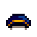 | Official Cap | Looks like it belonged to a postman or policeman. Either way, it's still very soft and smells okay. |
Ol' Mariner (Catch 20 different fish) |

|
Blue Bonnet | Harken back to simpler times with this prairie bonnet. |
Treasure Trove (Donate 40 different Items) |
| 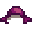 | Plum Chapeau | Looks alright. |
Sous Chef (Cook 25 different recipes) |
| Skeleton Mask | The red eyes are glowing mysteriously. |
Adventurer's Guild (Defeat 50 Skeletons) | |
| 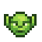 | Goblin Mask | Freak out the neighborhood with this creepy mask. Rubber ear joints for effect. |
Full Shipment (Ship Every Item) |

|
Chicken Mask | You'll be sure to get them grinning with this one. |
A Big Help (Complete 40 Quests) |
| 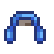 | Earmuffs | Keep your ears toasty. Lined with artisanal velvet from Castle Village. |
Popular (5-heart friend w/20 people) |
| Delicate Bow | Little pink jewels glisten as you examine it. |
Cook (Cook 10 different recipes) | |
| Tropiclip | It's shaped like a little palm tree. |
Moving Up (Upgrade Your House) | |
| 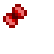 | Butterfly Bow | This one is very soft. |
A New Friend (5-heart friend with someone) |

|
Hunter's Cap | The wool lining should stay warm deep into the forest. |
Living Large (Upgrade house to maximum) |
| 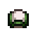 | Trucker Hat | Mesh in the back to keep your head cool. |
Artisan (Craft 30 different items) |

|
Sailor's Cap | It's fresh and starchy. |
Winter Festival (Win Fishing Competition) |

|
Good Ol' Cap | A floppy old topper with a creased bill. Looks like it's been through a lot. |
Greenhorn (15k Earned) |
| 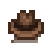 | Fedora | A city-slicker's standard. |
500 star tokens at the Stardew Valley Fair |
| 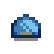 | Cool Cap | It looks really faded, but it used to be a vibrant blue. |
Homesteader (250k Earned) |
| 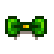 | Lucky Bow | The middle is made of solid gold. |
Cowpoke (50k Earned) |
| 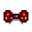 | Polka Bow | This one's sure to be turn heads. |
Gofer (Complete 10 Quests) |

|
Gnome's Cap | This gnome had a very large head. |
Craft Master (Craft Every Item) |
| Eye Patch | You can't tell if it's real or just from a costume shop. |
Master Angler (Catch Every Fish) | |
| 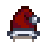 | Santa Hat | Celebrate the magical season. |
Networking (5-heart friend w/10 people) |
| 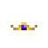 | Tiara | This one has a big amethyst encircled by gold. |
Cliques (5-heart friend w/5 people) |
| 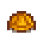 | Hard Hat | Keep your dome in one piece. |
Adventurer's Guild (Defeat 30 Duggers) |

|
Sou'wester | The shape helps to keep sailors dry during storms. |
Fisherman (Catch 10 different fish) |
| Daisy | A fresh spring daisy to put in your hair. |
D.I.Y. (Craft 15 Items) | |
| 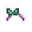 | Watermelon Band | The color scheme was inspired by the beloved summer melon. |
Mother Catch (Catch 100 Fish) |
| 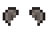 | Mouse Ears | Made from synthetic fibers. |
Best Friends (10-heart friend with someone) |
| 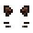 | Cat Ears | Whiskers included. |
The Beloved Farmer (10-heart friend w/8 people) |
| 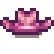 | Cowgal Hat | The band is studded with fake diamonds. |
Monoculture (Ship 300 of one Crop) |
| 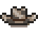 | Cowpoke Hat | For dairy experts. |
Polyculture (Ship 15 of each Crop) |

|
Archer's Cap | Fashionable whether you're an archer or not. |
Gourmet Chef (Cook Every Recipe) |